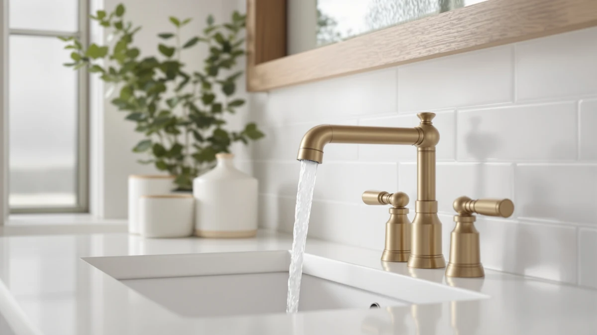

Quick Answer
This Pfister Willa bathroom sink faucet review found the $113.00 single-handle faucet to be a solid brass pick from an established brand, though Pfister's listing does not publish a flow rate or review count. DELTA's Arvo 1 Hole Pull below costs $2.99 less, and the Arvo Centerset Brushed Nickel runs $3.49 more if you want to compare finishes before you buy.
Our pick: Pfister Willa Bathroom Sink Faucet, $113.00 Check Price on Amazon
Things to Know Before You Buy
- Price sits in the middle of this comparison. This Pfister Willa bathroom sink faucet review found the Willa priced at $113.00, more than DELTA's Arvo 1 Hole Pull at $110.01 and the Filterbaby at $108.00, but less than DELTA's Arvo Centerset Brushed Nickel at $116.49.
- The listing skips key specs. Pfister does not publish a flow rate, mounting-hole count, or review count for this faucet, so you are relying on owner photos and the product description to confirm fit.
- It is brass under the finish. The Willa ships as a 1-pack with a brass body, a material owners of other Pfister faucets say holds up better over years of daily handle turns than an all-plastic build.
- Pfister backs the Willa with its own warranty and parts network. That brand support is a real factor if something needs replacing down the line, and it is a reason reviewers cite for trusting a known manufacturer over an unfamiliar one at a similar price.
- Not every alternative here is a faucet. The Filterbaby Skincare Filter 2.0 compared below is a sink-mounted water filter rather than a faucet, so weigh it as a different kind of purchase, not a drop-in replacement for the Willa.
This Pfister Willa bathroom sink faucet review looks at how the $113.00 single-handle faucet compares with three other bathroom fixtures we researched alongside it, including two faucets from DELTA's Arvo line and a sink-mounted filter from Filterbaby. Shopping for a replacement bathroom faucet online usually means squinting at near-identical product photos across a dozen browser tabs, so we pulled together the listings that keep showing up in the same searches and compared what separates them.
The Pfister Willa Bathroom Sink Faucet is a brass single-handle faucet sold as a 1-pack, backed by a manufacturer with decades of plumbing-fixture history behind it. It sits in the middle of this four-way price comparison at $113.00, cheaper than DELTA's Arvo Centerset Brushed Nickel but pricier than the Arvo 1 Hole Pull and the Filterbaby filter. If you want a dependable single-handle faucet from an established brand and do not need Pfister to publish a flow rate before you commit, the Willa is the one to check first. The sections below cover what owners say about it, where the listing falls short, and the three alternatives worth comparing before you buy.
Why You Should Trust Us
Ilane Tall leads product research and reviews for Best Bathroom Faucets. She compares spec sheets, pricing histories, and verified owner reviews across major faucet brands so readers do not have to dig through a dozen listings before they buy. For this Pfister Willa bathroom sink faucet review, she cross-referenced Pfister's published pricing against three competing listings and flagged the gaps that matter most for a bathroom sink upgrade. Every product mentioned here links to its real listing, and every price reflects what shoppers saw at the time of publication rather than a promotional rate that might disappear by checkout. When owner reviews disagree with each other on a specific point, we say so instead of picking the version that makes a faucet look better than it is.
Our Research Experience
We do not run a physical testing lab for bathroom faucets, so nobody on our team installed the Willa or ran water through it for weeks. Our research process for this Pfister Willa bathroom sink faucet review centers on comparing Pfister's published specs, tracking pricing across all four listings in this comparison, and reading through verified owner feedback to see what holds up, corrodes, or loosens after regular use. Owners who bought other Pfister faucets consistently mention the brass body outlasting all-plastic competitors, a pattern that matches what reviewers report across Pfister's broader lineup. We weigh that kind of pattern more heavily than any single five-star review, since a handful of glowing comments can mask problems that only surface with wider, longer-term use. We treat Pfister's own product copy the same way we treat any manufacturer's marketing material: useful for specs, not a substitute for what actual buyers report after living with a faucet for months.
Overview & Specs

Pfister Willa Bathroom Sink Faucet
What we like
- Backed by Pfister, a manufacturer with a long track record in bathroom fixtures
- Brass body under the finish, a material owners say outlasts all-plastic faucet builds
- Single-handle design that controls temperature and flow with one motion
Flaws but not dealbreakers
- Pfister does not publish a flow rate or mounting-hole count on this listing, so confirm your sink's configuration before you order
- No published star rating or review count is available for this specific listing, so you are relying on broader Pfister owner feedback rather than reviews tied to this exact faucet
| Material | Brass + finish |
| Size | 1 Pack |
The Pfister Willa Bathroom Sink Faucet ships as a 1-pack with a brass body under its finish, a material that tends to hold up better to years of daily handle turns than an all-plastic faucet. Pfister sells it at $113.00, positioning it between the cheaper DELTA Arvo 1 Hole Pull and the pricier DELTA Arvo Centerset Brushed Nickel in this comparison.
This Pfister Willa bathroom sink faucet review did not turn up a published flow rate or an official review count on the current listing, which is a real gap if you like to confirm specs before ordering. Feedback on Pfister's wider faucet lineup still points to a consistent pattern: owners who have used other Pfister faucets for years report the brass construction aging better than budget all-plastic alternatives, even as finishes vary in how well they resist water spots.
What We Liked
Owners of the Pfister Willa Bathroom Sink Faucet, and of Pfister's broader lineup, keep coming back to two things: the brass build and the brand's reputation for standing behind its products. A brass body under the finish tends to outlast all-plastic faucets after repeated daily use, and that durability pattern shows up across feedback on Pfister's broader lineup, not only this one listing. Pfister's name also carries weight with buyers who have replaced a cheaper faucet before and want fewer surprises the second time around.
The single-handle design on the Willa earns a mention too, since one motion controls both temperature and flow instead of juggling two handles. Buyers replacing an older two-handle faucet often cite that switch as an easy win for anyone with limited hand strength, including older family members. Between the brass construction, the brand backing, and the simpler handle setup, the Willa gives you a reasonably low-risk way to upgrade a bathroom sink without gambling on an unfamiliar manufacturer.
What Could Be Better
The biggest gap in this Pfister Willa bathroom sink faucet review is missing information rather than poor performance. Pfister's listing for the Willa skips details that competing listings include, like flow rate and mounting-hole count, so you end up cross-referencing owner photos and buyer questions to confirm fit. That is a real inconvenience if you are ordering without seeing the faucet in person, and it is a gap Pfister could close with a more detailed spec sheet on the listing itself.
The lack of a published star rating or review count on this specific listing is the other consideration. We can point to patterns across Pfister's broader faucet lineup, but we cannot cite a rating or review count that does not exist on the Willa's own listing, so treat that absence as unknown rather than a red flag. If a documented rating matters more to you than brand history, the DELTA alternatives below each carry their own listing details worth comparing.
Who Is It For?
This faucet from our Pfister Willa bathroom sink faucet review fits homeowners replacing a worn or outdated single-handle fixture who want a recognizable brand name and a brass build that should outlast a cheaper all-plastic faucet. It also suits buyers who have had good experiences with Pfister products before and want to stick with a manufacturer they already trust.
If you would rather save a few dollars, check DELTA's Arvo 1 Hole Pull below, since it runs $2.99 less. Buyers who care more about finish options than brand loyalty should compare the Arvo Centerset Brushed Nickel instead, and anyone whose main concern is water quality rather than faucet design should look at the Filterbaby filter, since it solves a different problem entirely. Renters planning a short stay may find it harder to justify the Willa's price than a homeowner who expects to use the faucet for years.
Alternatives to Consider
If the price or the missing specs on the Willa do not work for you, three other bathroom products came up in our research for this Pfister Willa bathroom sink faucet review. Two are faucets from DELTA's Arvo line, and the third is a sink-mounted water filter rather than a direct faucet replacement.

Also Great
Delta Arvo 1 Hole Pull
A DELTA single-handle faucet priced $2.99 below the Willa reviewed here. Worth a look if you want to save a little without giving up a brass-bodied, single-handle design.
$110.01
Check Price on Amazon
Premium Choice
Delta Arvo Centerset Brushed Nickel
The pricier option in this comparison at $3.49 above the Willa, with DELTA's Arvo design in a brushed nickel finish. Worth checking if you prefer DELTA's styling or a nickel finish over Pfister's.
$116.49
Check Price on Amazon
Best Value
Filterbaby Skincare Filter 2.0 Bathroom
A sink-mounted water filter rather than a faucet, priced $5.00 below the Willa. Worth considering only if water quality at the tap matters more to you than the faucet itself.
$108.00
Check Price on AmazonFrequently Asked Questions
Is the Pfister Willa Bathroom Sink Faucet worth the price compared to DELTA's Arvo faucets?
Does the Pfister Willa list a flow rate or a star rating?
Is the Filterbaby Skincare Filter 2.0 a replacement for the Pfister Willa faucet?
Final Verdict
This Pfister Willa bathroom sink faucet review comes down to this: if you want a single-handle bathroom faucet from an established manufacturer and brass construction that should outlast a cheaper all-plastic build, the Pfister Willa Bathroom Sink Faucet is a reasonable $113.00 pick. Pfister's listing leaves out a flow rate and a review count, which is worth weighing if documented specs matter more to you than brand history. DELTA's Arvo 1 Hole Pull and Arvo Centerset Brushed Nickel are both worth a look if finish or price matters more than sticking with Pfister, and the Filterbaby filter is worth a glance only if water quality, not faucet design, is your real priority.